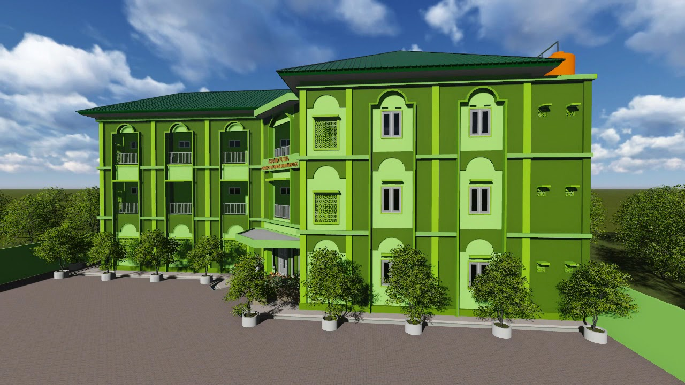

Dengan wakaf uang dan wakaf melalui uang di Program Wakafin Yaitu Wakaf Pertanian Terpadu, Wakaf Pesantren Ulama Pemberdaya, dan Wakaf Ekonomi (Wakaf Ternak, Ritel Sayuran Sehat , Bisnis Online, Surat Berharga, dan Properti), kini semua orang bisa berwakaf. Nikmati kemudahan berwakaf uang dengan berbagai pilihan pembayaran yang nyaman bagi anda.
Wakaf pertanian terpadu yaitu konsep keterpaduan yang saling berkaitan antara pertanian, perkebunan, peternakan, dan sumber air untuk membangun ketahanan pangan. Krisis pangan menjadi problem umat Islam saat ini. Membangun ketahanan pangan adalah solusi menghadapinya. Dengan pengelolaan wakaf pertanian terpadu untuk menghasilkan pangan dengan sistem multi-manfaat, sehingga dapat menghasilkan pangan berkualitas, surplus yang lebih besar dan mampu menopang kebutuhan pangan masyarakat serta berdampak terhadap pembentukan dan peningkatan nilai spiritual umat Islam yang beriman dan bertaqwa kepada Allah SWT melalui Masjid dan Pesantren sebagai wadah pembinaannya.
Kaderisasi ulama yang mampu memberdayakan masyarakat tidak hanya dari sisi keilmuan namun juga penggerak sosial dan ekonomi yang dibingkai dengan keimanan dan ketaqwaan kepada Allah SWT. Pesantren bagian dari Pendidikan yang syarat dengan pembinaan calon ulama pemberdaya juga Pesantren merupakan fondasi peradaban umat Islam. Wakaf menjadi bagian penting untuk memastikan generasi ulama pemberdaya sebagai pewaris para Nabi mendapat Pendidikan yang layak dalam lingkup Pesantren demi membentuk akhlakul karimah dan peradaban Islam yang maju dan kuat. Program Wakaf Pesantren Ulama Pemberdaya menyalurkan dana wakaf Anda untuk membangun sarana dan prasarana Pesantren termasuk media pembelajaran, memastikan generasi penerus ulama pemberdaya setiap daerah di Indonesia mendapat Pendidikan layak di Pesantren.
Wakaf Ekonomi adalah Wakaf yang dapat menggerakan perekonomian Umat Islam untuk memproduktifkan asset wakaf, sehingga menjadi pijakan utama program ini. Awal diaktivasi program ini menggerakkan empat program, yaitu: Wakaf Ternak, menggerakkan perekonomian melalui pemeliharaan dan pembiakan hewan ternak seperti kambing, sapi, ayam, dan sebagainya demi kemaslahatan umat Islam, yaitu melalui fattening (penggemukan) dan breeding (pembibitan); Wakaf Properti bertujuan untuk meningkatkan manfaat dari aset wakaf agar mampu berkontribusi di bidang sosial ekonomi serta menopang kemajuan pembangunan suatu daerah. Pengelolaan wakaf dalam bentuk properti, ditujukan untuk meningkatkan manfaat dari aset wakaf. Hotel Syariah, salah satu contoh program Wakaf Properti, yakni membangun gedung hotel syariah di kawasan wisata dengan dana wakaf dan maslahat pengelolaannya didayagunakan untuk kepentingan umat Islam. Wakaf Ritel Sayuran Sehat merupakan hasil dari optimalisasi dana wakaf melalui pengelolaan bisnis yang berkaitan erat dengan pemberdayaan pertanian terpadu, sehingga lebih produktif berkelanjutan dan memberi manfaat berlipat bagi umat Islam. Wakaf Ritel merupakan model bisnis berbasis wakaf. Wakaf Bisnis Online adalah transaksi ekonomi secara online berupa segala kebutuhan hidup manusia yang bersumber dari dana wakaf, dioptimalkan untuk pemberdayaan ekonomi umat Islam. Wakaf Saham atau surat berharga bertujuan untuk memaksimalkan perolehan deviden (bagi hasil) yang akan dioptimalkan untuk memberikan manfaat bagi umat Islam.

Alamat Kantor
Jl. Bhakti Warga No.4B, RT.001/RW.003, Jatisampurna, Kec. Jatisampurna, Kota Bks, Jawa Barat 17433